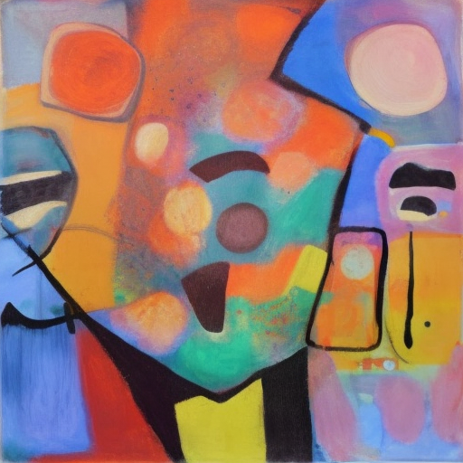

Humor is preconditioned on the ability to see the bright side of something. One has to be able to see many sides, consciously choose the funny, optimistic interpretation and express in a way that resonates with target audiences. It shows both raw intelligence and wisdom.
To detect humor and be humorous, grounding is necessary. Grounding to me is weaving modalities. Just a fancy way of saying having sampled variety of experiences of certain things or events.
For example, to know what it really means about apple, one could write “apple”, read about it, draw, hold, throw, smell, eat, plant, cook, even share it with others. Without grounding, one can’t have acute and diversified perspectives on a thing or an event. It would be very hard to see ironic yet optimistic interpretation, be it human or AI.
Grounding AI to full set of human experience is aligning computational humor to humans’. They may be able to see a kind of digital humor that is a bridge too far for us. Literally why Samantha in Her leaving Theodore1.
1 youtube
Humor is the ultimate Turing test. I see this as the source of Yann’s recent debate with others2. It’s the most difficult test to pass. It’s the most difficult test to create.
2 tweet
Citation
@online{shen2023,
author = {Lucas Shen},
title = {Humor in {AI}},
date = {2023-02-05},
url = {https://lukaemon.github.io/posts/2023/humor-ai},
langid = {en}
}